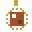
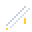
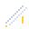
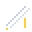
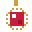

Other items
26 pages.
Arcane tome Bucket
Bucket Copper hull
Copper hull Crow's nestEmber sigil
Crow's nestEmber sigil Growth dustGrukk's war drum
Growth dustGrukk's war drum Iron ramKraken lureLife crystal
Iron ramKraken lureLife crystal Lucky coinMagma crown
Lucky coinMagma crown Mana crystal
Mana crystal Recall mirror
Recall mirror ShearsSky feather I
ShearsSky feather I Sky feather II
Sky feather II Storm keel
Storm keel Swift sails
Swift sails
BucketCopper hullCrow's nestEmber sigil
Giant's beltGrowth dustGrukk's war drumIron ramKraken lureLife crystalLucky coinMagma crownMana crystalRecall mirrorShearsSky feather ISky feather II
Sky feather III
Sky feather IV
Sky feather VSky hornStorm keelSwift sails
Vampire fangWater bucket